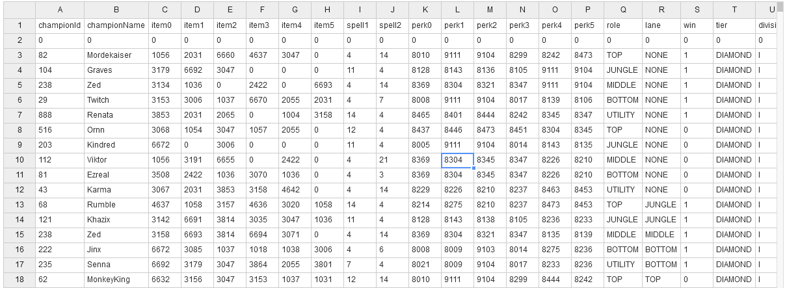
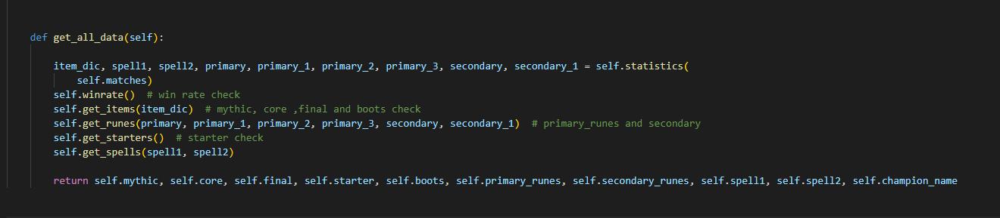
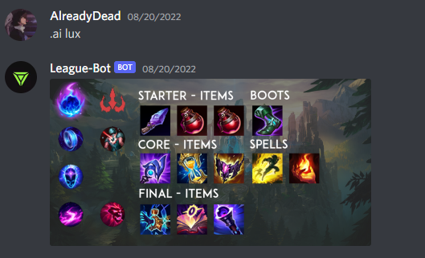

Objetivo:
Este proyecto nació con el objetivo de encontrar una forma para conocer que Objetos, runas y otras cosas se estaban usando con cualquier personaje del juego League
Of
Legends
. A pesar de que ya existen sitios web y aplicaciones que tienen el mismo objetivo, necesitaba una solución que no necesitara instalar programas externos o abrir el navegador, dado que no todos los computadores pueden jugar, utilizar Discord(para llamadas) y abrir una pestaña en el navegador para buscar la información que necesitan.
Además estaba en búsqueda de un proyecto que me permitiera mejorar mis habilidades con Python, Pandas(para procesar datos) y el trabajo con APIs
Recopilación de información
Para saber que ítems y runas convenían más, era necesario saber lo que los jugadores de rango más alto estaban usando con los más de 140 personajes, aquí es donde la API de league
of
legends
entra en juego. Esta API contiene toda la información del juego como historial de partidas, estadísticas competitivas, partidas en vivo y mucho más. En el sitio https://developer.riotgames.com/
se encuentra toda la información sobre como usarla y los requisitos.
Como la API de riot
es una web API, tuve que aprender a interactuar con esta usando la librería request
, a pesar de que existen librerías especificas
para interactuar con la API como lo son riotwatcher
, cassiopeia
y pyot
. Como trabaje con la librería request
tuve que hacer todo desde 0, incluyendo el manejo de errores.
 Código para obtener una lista de jugadores según su rango
Código para obtener una lista de jugadores según su rango
Finalmente, después de muchas versiones, programe un script que recopila información de miles de partidas de jugadores de alto rango y devuelve un archivo CSV con la siguiente estructura:
 Archivo CSV con información recopiladaAnálisis de información
Con la información ya ordenada en un CSV, era momento de analizarla para poder encontrar que objetos y cuáles runas eran mejores para un determinado personaje. Para esto utilicé pandas y NumPy, escribí un script que toma como entrada un Campeón y su rol en el juego y devuelve sus ítems, runas y hechizos más populares con mayor porcentaje de victorias.
 Extracto de código del archivo analize_data.pyCreación de imágenes
Con la parte del análisis, podía pasar a la creación de la imagen que tendrá la información clara para el usuario(dado que el archivo que analiza devuelve los IDs
, los cuales son incomprensibles). Para este script usé la librería Pillow
, la cual es útil para todo lo relacionado con imágenes en Python.
El archivo interactúa con el script de análisis para crear la imagen de un el personaje deseado, finalmente devuelve un archivo PNG que se ve así:
Bot de Discord
Lo último por hacer era programar un archivo que permitiera interactuar con Discord, necesitaba mandar la imagen por el canal de texto dependiendo del campeón que el usuario necesitara, para esto utilicé la librería Discord.py y cree un bot en el sitio de Discord.
 Extracto de código del archivo discord_bot.py
Extracto de código del archivo discord_bot.py
Resultado final
Al combinar todos los archivos, el usuario es capaz de incluir el bot a su servidor y hacer consultas sobre los objetos de determinado campeón usando el comando .ai [nombre campeón]:
Todos los archivos y el código están publicados en mi repositorio https://github.com/Already-Dead-24/ExtractData.git